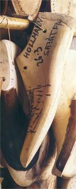

La horma es una copia abstracta en madera del pie humano. Una de sus funciones es sustituir el pie durante la confección del zapato para actuar como superficie de trabajo en la que los fragmentos de piel lisos puedan adquirir forma plástica.
La segunda función consiste en reflejar la orientación de la moda y los requisitos estéticos; es decir, mostrar una forma perfecta, como el modelo de zapato elegido Durante los últimos cien años, la moda del calzado masculino no ha sufrido variaciones extremas. Existen unos pocos modelos básicos que se diferencian entre sí por la forma de la puntera, en el corte de la parte superior y en los elementos ornamentales. Por ello se han desarrollado modelos de hormas bautizados con el nombre de los modelos característicos, como por ejemplo, la horma Budapest, con puntera alta.
Las hormas correspondientes al volumen interior y la forma exterior del zapato se elaboran de acuerdo con las medidas que se han tomado del pie, y siempre por pares. El pie derecho nunca es el reflejo perfecto del izquierdo, se dan pequeñas o grandes diferencias en cuanto al tamaño y a la forma. Un buen hormero tiene en cuenta las más leves diferencias especificadas en la hoja de medición y las traslada al zapato.

Actualmente apenas quedan hormeros que sigan trabajando de una forma totalmente artesana y que ignoren las ventajas del trabajo mecánico para aliviar su fatigoso trabajo aunque sea ocasionalmente. Presentaremos los cuidadosos procedimientos de la elaboración de una horma desde un singular taller donde siguen utilizándose únicamente herramientas tradicionales y que gracias a un trabajo muy escrupuloso consigue hormas perfectas, sin las cuales las obras maestras que constituyen los zapatos a medida no podrían existir.